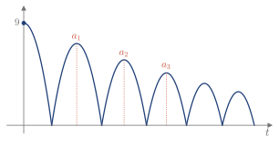

2.6 Serie geométrica
En una serie geométrica, cada término es el anterior multiplicado por un número fijo. Es el tipo de serie cuya suma se calcula con una fórmula cerrada.
Suma de la serie geométrica
Definición 2.8
La serie \sum_{n=0}^\infty r^n=1+r+r^2+r^3+\dots,\qquad r\in\mathbb{R}, se llama serie geométrica, y r es su razón.
Su suma parcial se obtiene restando S_N y rS_N: \begin{aligned} S_N&=1+r+r^2+\dots+r^N\\ rS_N&=r+r^2+\dots+r^N+r^{N+1}\\ (1-r)S_N&=1-r^{N+1} \end{aligned} Por tanto, si r\ne1, S_N=\frac{1-r^{N+1}}{1-r}.
- |r|<1: r^{N+1}\to0, así que S_N\to\frac1{1-r}.
- |r|>1: |r^{N+1}| crece sin límite, así que S_N no converge.
- r=1: S_N=N+1, que no converge.
- r=-1: S_N salta entre 1 y 0, que tampoco converge.
Recuerda
\sum_{n=0}^\infty r^n=\frac1{1-r}\quad\text{si }|r|<1. Si |r|\ge1, la serie es divergente.
Ejemplo 2.18
Estudiar la convergencia de \displaystyle\sum_{n=0}^\infty\left(\frac12\right)^n y de \displaystyle\sum_{n=0}^\infty\left(\frac32\right)^n.
La primera tiene razón r=\frac12, así que converge, y su suma es \frac1{1-\frac12}=2.
La segunda tiene razón r=\frac32>1, así que es divergente.
Comprobación: quitando el primer término de la primera, \frac12+\frac14+\frac18+\dots=2-1=1, el valor de la Figura 2.7.
Otro índice inicial o un factor delante
Si la serie tiene un factor delante, o empieza en otro índice, se saca factor común y queda la serie geométrica: \sum_{n=m}^\infty c\,r^n=c\,r^m+c\,r^{m+1}+\dots=c\,r^m\left(1+r+r^2+\dots\right).
Recuerda
Si |r|<1, \sum_{n=m}^\infty c\,r^n=\frac{c\,r^m}{1-r}=\frac{\text{primer término}}{1-r}.
Ejemplo 2.19
Obtener el valor de \displaystyle\sum_{n=3}^\infty r^n, con |r|<1. (2017/18 3E)
El primer término es r^3, así que \sum_{n=3}^\infty r^n=\frac{r^3}{1-r}.
Comprobación: restando a la serie completa sus tres primeros términos, \frac1{1-r}-1-r-r^2=\frac{1-(1+r+r^2)(1-r)}{1-r}=\frac{r^3}{1-r}.
Ejemplo 2.20
Estudiar la convergencia de S=5-\dfrac{10}3+\dfrac{20}9-\dfrac{40}{27}+\dots y, si converge, calcular su suma. (2021/22 1E)
Cada término es el anterior multiplicado por r=-\frac23. Como |r|<1, converge, y S=\frac{5}{1+\frac23}=3.
Comprobación: las sumas parciales saltan a un lado y otro de 3, con S_4\approx2.41 y S_5\approx3.40.
Problemas
Un proceso en el que cada paso es una fracción fija del anterior se plantea como una serie geométrica.
Ejemplo 2.21
Se suelta una pelota desde una altura de 9 m. Con cada bote, rebota hasta el 80 % de su altura previa (Figura 2.8). (2024/25 3E)
- ¿Hasta qué altura rebota en el quinto bote?
- ¿Cuál es la suma de las alturas de todos los botes?
La altura del bote n es a_n=9\cdot0.8^n.
(a) a_5=9\cdot0.8^5\approx2.95 m.
(b) Es una serie geométrica de razón r=0.8 y primer término a_1=7.2: S=\sum_{n=1}^\infty9\cdot0.8^n=\frac{7.2}{1-0.8}=36\text{ m}.
Los 9 m iniciales no cuentan, porque no corresponden a un bote; con ellos, serían 45 m.

Figura 2.8. Altura de la pelota a lo largo del tiempo. Cada altura, a_1, a_2, a_3…, es el 80 % de la anterior.
Ejemplo 2.22
Un alpinista quiere escalar una pared de 200 m. En el primer intento sube 100 m. Después se cansa, y cada ascenso cumple a_{n+1}=a_n\,r. Sabiendo que en el tercer intento sube 25 m, calcular r y estudiar si llega a la cima. (2019/20 5E)
Como a_3=100\,r^2=25, se obtiene r=\frac12. La suma de todos los intentos es S=\sum_{n=1}^\infty100\left(\frac12\right)^{n-1}=\frac{100}{1-\frac12}=200\text{ m}. La suma es justo la altura de la pared, pero solo con infinitos intentos. Con un número finito N de intentos, S_N=200\left(1-\frac1{2^N}\right)<200: no llega a la cima.
Con los contenidos de esta sección puedes hacer los ejercicios 2.28–2.35.